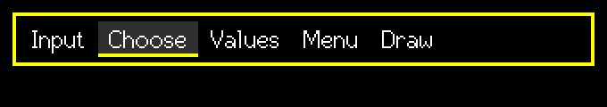

SuperTabBar
Variable-width tabs; you show the page that belongs to the selected tab.
Editable (modal edit)src/SuperTabBar.h
What it looks like

Real renders from the library (headless, dark theme, Font2, shown at 2x).
Quick start
SuperTabBar tabs(&lcd, 0, 0, 320, &lgfx::fonts::Font2, &Enc, &BtnA, &BtnB);
tabs.AddTab("Input"); tabs.AddTab("Values"); tabs.AddTab("Menu");
tabs.SetOnAccept([](void*){ showPage(tabs.GetSelected()); });Unique features
- Tabs are as wide as their text plus
TabPad. - When they do not fit, the bar scrolls and grey < > arrows show hidden tabs.
- The bar draws only the tabs; the page below is your job (usually
SetVisibleon a control list +form.Draw()).
GUI workflow
Encoder moves the cursor along the tabs (stops at the ends). A short/long selects the tab under the cursor. B short = cancel; B long = cursor back to the selected tab.
Touch: one tap selects a tab (it acts on the first tap even when idle). The scroll arrows are indicators, not buttons.
Event workflow
edit contract. OnChange = cursor moved; OnAccept = a tab was selected: switch the page here.
Main API
| Call | What it does |
|---|---|
AddTab / ClearTabs | Content |
SetSelected / GetSelected | Chosen tab |
GetCursor() | Cursor while editing |
Tips and tricks
TipSwitch pages with
SetVisible(v, false) on each control and a single form.Draw() afterwards.